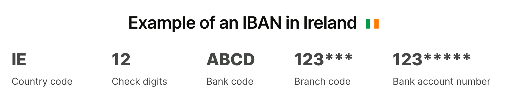

ข้อมูลการเดินทางมาศึกษาต่อไอร์แลนด์
จัดทำโดยเพจ/กลุ่มเฟซบุ๊ก นักเรียนไทยในไอร์แลนด์ - ปรับปรุงล่าสุด 25 ส.ค. 2024
ข้อมูลทั่วไป
- Education in Ireland
- เว็บไซต์ส่งเสริมการศึกษาในไอร์แลนด์ จัดทำโดยรัฐบาลไอร์แลนด์
- มีข้อมูลทั่วไปเกี่ยวกับหลักสูตร ค่าใช้จ่าย การเรียน การทำงานระหว่างเรียน
- Citizens Information
- ข้อมูลการเข้าเมือง ใบอนุญาตพำนัก การรักษาพยาบาล สิทธิของผู้เช่าบ้าน สิทธิแรงงาน
- ไม่ว่าจะหาอะไร ลองที่เว็บไซต์นี้ก่อนเป็นแห่งแรก
- ดำเนินงานโดยการสนับสนุนของรัฐบาลไอร์แลนด์ ข้อมูลทุกอย่างจะมีลิงก์ไปยังหน้าเว็บหรือเอกสารที่เกี่ยวข้องของหน่วยงานรัฐที่รับผิดชอบโดยตรง
- Irish Council for International Students
- มีข้อมูลด้านสิทธิต่างๆ ที่เกี่ยวกับนักเรียนนานาชาติ เช่น สิทธิเกี่ยวกับที่พัก การทำงาน การเลือกปฏิบัติ การถูกปฏิเสธวีซ่า
- ICOS เป็นองค์กรไม่แสวงกำไรที่มีสมาชิกประกอบด้วยสถาบันอุดมศึกษาและองค์กรนักศึกษาในไอร์แลนด์
- สำหรับข้อมูลเฉพาะสำหรับสถานศึกษา ให้ดูที่เว็บไซต์ของสถานศึกษา หรือเว็บไซต์/สื่อสังคมออนไลน์ของสหภาพหรือสโมสรนักศึกษา
หาที่เรียน
- การเรียนในไอร์แลนด์นานกว่า 90 วัน ไม่ว่าจะในระดับมหาวิทยาลัยหรือโรงเรียนภาษาอังกฤษ จะต้องขอใบอนุญาตพำนัก และการจะขอใบอนุญาตพำนักได้ จะต้องเลือกหลักสูตรจากรายการ Interim List of Eligible Programmes (ILEP) เท่านั้น
- ระบบการศึกษาในไอร์แลนด์ทั้งหมด ทั้งสายสามัญและสายวิชาชีพ จะอยู่ภายใต้กรอบ National Framework of Qualifications ซึ่งมี 10 ระดับ
- ในรายละเอียดทุกหลักสูตรจะมีบอกว่าหลักสูตรนี้ NFQ Level อะไร
- การศึกษาที่เรียกว่า "Higher Education" หรืออุดมศึกษาในไอร์แลนด์ จะเริ่มตั้งแต่ระดับ 6
- ระดับ 6 - Advanced Certificate / Higher Certificate เทียบเท่า ประกาศนียบัตรชั้นสูง (ปวส.) ของไทย
- ระดับ 7 - Ordinary Bachelor Degree (โดยทั่วไปเรียน 3 ปี) เทียบเท่า ปริญญาตรีของไทย
- ระดับ 8 - Higher Diploma / Honour Bachelor Degree (โดยทั่วไปเรียน 4 ปี) เทียบเท่า ปริญญาตรีของไทย
- ระดับ 9 - Post-Graduate Diploma / Masters Degree ปริญญาโท
- ระดับ 10 - Doctoral Degree / Higher Doctorate ปริญญาเอก
- โรงเรียนภาษาอังกฤษ
- ตรวจสอบโรงเรียนภาษาอังกฤษที่ได้รับการรับรองจาก Accreditation and Co-ordination of English Language Services (ACELS) ได้ที่ https://www.acels.ie
- ปี 2024 เป็นช่วงเปลี่ยนผ่านไปสู่ระบบการรับรองคุณภาพแบบใหม่ที่ชื่อว่า International Education Mark (IEM) โรงเรียนภาษาอังกฤษหลังจากนี้ ถ้าจะรับนักเรียนจากนอกเขตเศรษฐกิจยุโรป (เช่นจากประเทศไทย) จะต้องได้รับตรา IEM
- มหาวิทยาลัยทั้งหมดในไอร์แลนด์เป็นมหาวิทยาลัยรัฐ
- Dublin City University
- National University of Ireland
- Trinity College Dublin (University of Dublin)
- University of Limerick
- University of Medicine and Health Sciences (Royal College of Surgeons in Ireland) (ในเมือง Dublin)
- Atlantic Technological University (ในเมือง Galway-Mayo, Sligo และ Letterkenny)
- Munster Technological University (ในเมือง Cork และ Tralee)
- South East Technological University (ในเมือง Carlow และ Waterford)
- Technological University Dublin
- Technological University of the Shannon: Midlands Midwest (ในเมือง Athlone และ Limerick)
- สถาบันอุดมศึกษาอื่น ทั้งของรัฐและเอกชน เช่น
- Dundalk Institute of Technology
- Dún Laoghaire Institute of Art, Design and Technology (IADT)
- National College of Art and Design (NCAD) (เป็น recognised college ของ University College Dublin)
- The Lir National Academy of Dramatic Art (เป็นส่วนหนึ่งของ Trinity College Dublin)
- Gaiety School of Acting (มีหลักสูตร MA Theatre Practice ร่วมกับ University College Dublin)
- Burren College of Art (มีหลักสูตร MFA in Studio Art ร่วมกับ University of Galway)
- Royal Irish Academy of Music
- Mary Immaculate College (วิทยาลัยด้านการศึกษาและศิลปศาสตร์ เป็นส่วนหนึ่ง University of Limerick)
- Marino Institute of Education (เป็น associated college ของ Trinity College Dublin)
- National College of Ireland
- Dublin Business School
- Griffith College
-
King's Inn (โรงเรียนกฎหมายของเนติบัณฑิตยสภาไอร์แลนด์)
-
NFQ 10 ระดับของไอร์แลนด์ สามารถเทียบกับ European Qualifications Framework (EQF) 8 ระดับ ของสหภาพยุโรป ได้ตามแผนภาพด้านล่างนี้ ผู้จบการศึกษาจากระบบ NFQ/EQF (ประเทศในสหภาพยุโรป และอีก 11 ประเทศ รวมถึงนอร์เวย์ สวิตเซอร์แลนด์ และตุรกี) สามารถศึกษาต่อในระดับต่อไปภายใต้ NFQ/EQF ได้ทันที
- สำหรับผู้มีใบอนุญาตพำนักประเภท Stamp 4, Stamp 5, หรือ Stamp 6 ที่พำนักในไอร์แลนด์มาแล้วไม่ต่ำกว่า 3 ปี สามารถสมัครเรียนหลักสูตรในโครงการ Springboard+ และโครงการ Human Capital Initiative Pillar 1 ของรัฐบาลได้ ทั้งนี้หลักสูตรทั้งหมด เรียนฟรี หรือมีส่วนลดสูงสุดถึง 90% มีทั้งหลักสูตรประกาศนียบัตร ปริญญาตรี และปริญญาโท ดูข้อมูลที่ SpringboardCourses.ie
ทุนการศึกษา / ทุนวิจัย
เฉพาะไอร์แลนด์
- Government of Ireland – International Education Scholarships
- Irish Research Council
- Science Foundation Ireland
- CareersPortal Scholarship Explorer
-
รวมทุนการศึกษา และส่วนลดค่าเล่าเรียน เน้นหลักสูตรวิชาชีพ
-
ติดตามเว็บไซต์และสื่อสังคมของมหาวิทยาลัย คณะ ศูนย์วิจัย และอาจารย์ในสาขาวิชาต่างๆ ในมหาวิทยาลัย สำหรับข่าวสารทุนการศึกษา ทุนวิจัย และทุนวิจัยระยะสั้น ที่จะมีประกาศตลอดปี
ยุโรปและสหภาพยุโรป (รวมไอร์แลนด์ด้วย)
- Study in Europe
- รวมทุนการศึกษา ทุนวิจัย และการสนับสนุนทางการเงินอื่นๆ จากหน่วยงานในสหภาพยุโรป
- เลือกหน้า Ireland
- EURAXESS ASEAN
- รวมทุนวิจัยที่เป็นความร่วมมือระหว่างสหภาพยุโรปและอาเซียน
ก่อนออกจากไทย
- ซิมการ์ดไทย / eSIM
- ถ้าจะรักษาหมายเลขโทรศัพท์ที่ไทยเอาไว้ เช่นเพื่อรับ OTP แนะนำให้เปลี่ยนเป็นแบบเติมเงินก่อนจะเดินทางมาไอร์แลนด์
- อายุของเงินที่เติมเข้าไปจะขยายออกไป 30 วันต่อการเติม 1 ครั้ง และสะสมได้สูงสุด 365 วัน ถ้าก่อนเดินทางแบ่งเติมครั้งละ 10-20 บาท 12 ครั้ง (สามารถทำได้ติดต่อกันในวันเดียวกัน) ก็จะได้เครดิตวัน 360 วัน โดยใช้เงิน 120-240 บาท
- เมื่ออยู่ไอร์แลนด์แล้ว สามารถเติมเงินผ่านแอปได้
- ให้ระวังการเผลอเปิด data roaming โดยไม่รู้ตัว
- โทรศัพท์หลายรุ่น สามารถใช้ 2 ซิมได้ แต่ซิมที่ 2 ต้องเป็น eSIM - ถ้าต้องการให้ซิมไทยเป็น eSIM ก็ให้ไปทำที่สาขาก่อนออกเดินทาง
- บัญชีธนาคารไทย
- บัญชีธนาคารที่ไม่มีการเคลื่อนไหว จะถูกเก็บค่ารักษาบัญชีรายเดือน ถ้าใช้แอปธนาคารจ่ายเงิน โอนเงิน หรือเติมเงินซิมมือถือครั้งละน้อยๆ เป็นครั้งคราว ก็จะทำให้บัญชีมีการเคลื่อนไหว และไม่ถูกเก็บค่าธรรมเนียม
- ปัจจุบันถ้าจะโอนเงินตั้งแต่ 50,000 บาทต่อรายการ หรือ 200,000 บาทต่อวัน จะต้องยืนยันตัวตนด้วยใบหน้า ถ้าคิดว่าอาจมีเหตุจำเป็นต้องทำธุรกรรมดังกล่าว ก็ให้ไปยืนยันตัวตนที่สาขาเตรียมไว้ก่อน
- NDID
- ถ้ามีแผนจะทำธุรกรรมออนไลน์ เช่น เปิดบัญชีธนาคาร เปิดบัญชีซื้อขายหลักทรัพย์ ยื่นแบบภาษีออนไลน์ ระหว่างที่อยู่ไอร์แลนด์ แนะนำให้ลงทะเบียน National Digital ID (NDID) ของไทยก่อนเดินทาง เนื่องจากการลงทะเบียนครั้งแรกอาจต้องไปยืนยันตัวตนที่สาขาของธนาคาร (ติดต่อธนาคารที่เรามีบัญชีอยู่แล้วเพื่อสอบถามการลงทะเบียน NDID - ไม่มีค่าใช้จ่ายในการลงทะเบียน)
- ใบขับขี่สากล
- ผู้มีใบขับขี่ของไทย สามารถทำใบขับขี่ระหว่างประเทศตามอนุสัญญาเจนีวา 1949 และใช้หนังสือเดินทางไทยร่วมกับใบขับขี่ดังกล่าวในประเทศไอร์แลนด์ได้
- ใบขับขี่ระหว่างประเทศนี้มีอายุ 1 ปี สามารถใช้ได้ในหลายประเทศ รวมถึงไอร์แลนด์และสหราชอาณาจักร
- ทำได้ที่สำนักงานขนส่งจังหวัด ดูข้อมูลเพิ่มเติมที่ กรมการขนส่งทางบก
- ใบขับขี่ระหว่างประเทศตามอนุสัญญาเวียนนา 1968 ที่มีอายุ 3 ปี ใช้ในไอร์แลนด์ไม่ได้
การเข้าเมือง / วีซ่า
ข้อมูลทั่วไปเกี่ยวกับใบอนุญาตเข้าเมืองและใบอนุญาตพำนัก
- การมาศึกษาในประเทศไอร์แลนด์จะต้องมี ใบอนุญาตเข้าเมือง (วีซ่า) เพื่อเดินทางเข้าประเทศในขั้นแรก ซึ่งโดยทั่วไปวีซ่านี้จะใช้พำนักอยู่ในไอร์แลนด์ได้ไม่เกินคราวละ 90 วัน
- ในประเทศไทย ทำได้ที่สถานเอกอัครราชทูตไอร์แลนด์ ประจำประเทศไทย
- ภายใน 90 วันหลังเข้าเมืองแล้ว จะต้องดำเนินการทำ ใบอนุญาตพำนัก (Irish Residence Permit - IRP) เพื่อให้อยู่ต่อได้หลัง 90 วัน
- IRP มีอายุประมาณ 1 ปี เมื่อหมดอายุแล้วสามารถขอต่ออายุได้
- การให้อนุญาตเข้าเมืองและการให้อนุญาตพำนักในไอร์แลนด์ เป็นกิจการของกระทรวงยุติธรรมและความเท่าเทียม (Department of Justice and Equality)
- ผู้ถือหนังสือเดินทางไทย ที่มีวีซ่าท่องเที่ยวระยะสั้นของสหราชอาณาจักร (UK) สามารถใช้วีซ่าดังกล่าวเดินทางเข้าไอร์แลนด์ได้ - แต่จะต้องเดินทางเข้า UK ก่อนจะเดินทางไปไอร์แลนด์
- จำนวนวันที่อยู่ในไอร์แลนด์ได้จะนับต่อเนื่องกับวันที่อยู่ใน UK ตามเงื่อนไขของ
Short Stay Visa Waiver Programme
และทั้งหมดจะต้องน้อยกว่า 90 วัน
- เช่นถ้าวีซ่าอนุญาตให้อยู่ใน UK ได้คราวละ 180 วัน และอยู่ UK ไปแล้ว 150 วัน ก็จะอยู่ในไอร์แลนด์ได้ไม่เกิน 30 วัน
- หรือถ้าวีซ่าอนุญาตให้อยู่ใน UK ได้คราวละ 180 วัน และอยู่ UK ไปแล้ว 10 วัน ก็จะอยู่ในไอร์แลนด์ได้ไม่เกิน 90 วัน
- วีซ่า/ใบอนุญาตพำนักของไอร์แลนด์ใช้เดินทางเข้าสหราชอาณาจักรไม่ได้
- ไอร์แลนด์ไม่ได้เป็นสมาชิกของเขตเชงเก้น วีซ่าเชงเก้นใช้เดินทางเข้าไอร์แลนด์ไม่ได้ และวีซ่า/ใบอนุญาตพำนักของไอร์แลนด์ก็ใช้เดินทางเข้าประเทศในกลุ่มเชงเก้นไม่ได้
- การจะทำวีซ่าเชงเก้น (หรือวีซ่าของประเทศใดๆ) ที่สถานทูตของประเทศนั้นๆ ในไอร์แลนด์
โดยปกติจะต้องมีสถานะเป็นผู้พำนักในไอร์แลนด์ก่อน (มีใบอนุญาตพำนัก-IRP)
และ IRP จะต้องมีอายุเหลือไม่น้อยกว่า 3 เดือน
- ดังนั้นหากมีแผนจะเดินทางไปประเทศอื่นภายในช่วงเวลาที่เพิ่งจะมาไอร์แลนด์ได้ไม่นาน (ช่วงที่ยังไม่ได้ IRP) ควรทำวีซ่าของประเทศดังกล่าวมาตั้งแต่ที่ประเทศไทย
- โดยทั่วไป การต่อเครื่องบิน หากยังอยู่ใน air side (ไม่ผ่านพิธีการตรวจคนเข้าเมือง) ไม่จำเป็นต้องใช้วีซ่าเปลี่ยนเครื่อง (transit visa) - โปรดตรวจสอบกับเว็บไซต์สถานทูตของประเทศที่จะไปเปลี่ยนเครื่องอีกครั้ง
การทำใบอนุญาตพำนัก (Irish Residence Permit - IRP) ครั้งแรก
- ทุกเรื่องเกี่ยวกับใบอนุญาตเข้าเมือง หาได้ในเว็บไซต์ https://www.irishimmigration.ie
- ในการทำ IRP ครั้งแรก ผู้ดำเนินการจะต้องเดินทางมายังประเทศไอร์แลนด์และผ่านด่านตรวจเข้าเมืองเป็นที่เรียบร้อย
- การจองนัดหมาย ขึ้นอยู่กับเมืองที่อยู่
- ดับลิน:
- หลังจากนั้นผู้ดำเนินการจะต้องมีซิมการ์ดหมายเลขโทรศัพท์ของไอร์แลนด์
เพื่อที่จะโทรจองคิว ที่หมายเลข 1800 800 630 (โทรฟรี)
- ควรจองคิวให้เร็วที่สุด ทันทีที่มาถึง เนื่องจากคิวเต็มเร็วมาก
- ข้อมูลที่ต้องเตรียมคือ ชื่อ-นามสกุลภาษาอังกฤษ วันเดือนปีเกิด และที่อยู่อีเมลที่จะใช้ในการติดต่อและรับอีเมลรับรองการจองคิว โดยต้องสะกดแต่ละตัวอักษรให้เจ้าหน้าที่ฟัง
- แนะนำให้เปิดตาราง NATO Phonetic Alphabet เอาไว้ เพื่อการสื่อสารที่ชัดเจน
- อย่าลืมตรวจสอบตัวสะกดทุกอย่างอีกรอบ
- เมื่อถึงวันนัดผู้ดำเนินการจะต้องเดินทางไปยัง
Registration Office in Burgh Quay, Dublin
พร้อมหนังสือเดินทางเล่มจริง และที่อยู่สำหรับจัดส่งบัตร IRP ทางไปรษณีย์
และต้องชำระค่าดำเนินการเป็นเงิน €300
- ทราเวลการ์ดบางธนาคารของไทยอาจใช้ชำระไม่ได้ แต่สามารถชำระด้วยเงินสดหรือบัตรเครดิตอื่นๆ
- นอกดับลิน: จองนัดหมายกับสถานีตำรวจ (Garda) ของเมืองนั้นๆ เช่น คอร์ก ให้อีเมลไปที่ corkcity.immigration@garda.ie
- อ่านเพิ่มเติมได้ที่ How to Register Your Immigration Permission for the First Time
{kind=link}
การต่ออายุใบอนุญาตพำนัก (IRP)
- การต่ออายุวีซ่าสามารถทำผ่านออนไลน์ได้ผ่านเว็บไซต์ Irish Immigration Service Online
- หลังจากนั้น IRP ใบใหม่จะถูกส่งมาให้ผ่านไปรษณีย์ อ่านเพิ่มเติมได้ที่ Registration Renewal
- เมื่อได้รับ IRP ทางไปรษณีย์แล้ว ให้เก็บซองจดหมายที่ส่งบัตรเอาไว้เป็น Proof of Address ซึ่งเป็นเอกสารจำเป็นเพื่อยืนยันที่อยู่ในการดำเนินการต่างๆ เช่น เปิดบัญชีธนาคาร
เว็บไซต์ข้อมูลเพิ่มเติมเกี่ยวกับใบอนุญาตเข้าเมืองและใบอนุญาตพำนัก
- ข้อมูลเกี่ยวกับการเข้าเมืองเพื่อไปศึกษาที่ไอร์แลนด์ และ คำถามที่พบบ่อย สำหรับนักศึกษานานาชาติ จาก Department of Justice
- Interim List of Eligible Programmes (ILEP) รายชื่อหลักสูตรภาษาอังกฤษ หลักสูตรอบรมวิชาชีพ หลักสูตรปูพื้นฐานเพื่อเข้ามหาวิทยาลัย และหลักสูตรมหาวิทยาลัย ที่ทางกระทรวงยุติธรรมรับรอง (การขอใบอนุญาตเข้าเมืองเพื่อเดินทางไปศึกษา จะต้องเป็นการเข้าเรียนในหลักสูตรตามรายชื่อ ILEP นี้เท่านั้น)
- ข้อมูลเกี่ยวกับการเข้าเมืองสำหรับนักศึกษานานาชาติ (Non-EU) โดย Immigrant Council of Ireland
ที่พัก
ข้อมูลทั่วไปเกี่ยวกับที่พัก
- การขาดแคลนที่อยู่อาศัยในราคาที่สมเหตุผลเป็นประเด็นระดับชาติของไอร์แลนด์ การหาที่พักในราคาและคุณภาพสมเหตุผลเป็นเรื่องที่ท้าทายและใช้เวลา โดยเฉพาะในเมืองใหญ่ เช่น ดับลิน (คลิกเพื่อดูข้อมูลย่านในดับลิน)
- การหลอกลวงฉ้อโกงให้โอนเงินค่ามัดจำ-ค่าเช่าล่วงหน้า เป็นสิ่งที่เกิดขึ้นเป็นประจำ
- มหาวิทยาลัยจำนวนมากมีที่พักของมหาวิทยาลัย แต่มักไม่เพียงพอ และอาจต้องย้ายออกในช่วงฤดูร้อน (พฤษภาคมเป็นต้นไป) ควรสอบถามเรื่องที่พักกับทางมหาวิทยาลัยตั้งแต่เนิ่นๆ เพราะจำเป็นต้องจองล่วงหน้าหลายเดือน
- โดยทั่วไปแล้ว หอพักนักศึกษาโดยเฉพาะจะมีค่าเช่าสูงกว่าห้องเช่าทั่วไป แต่มักเป็นราคาที่รวมค่าใช้จ่ายอื่นหมดแล้ว (ค่าไฟฟ้า ค่าอินเทอร์เน็ต) และพร้อมเข้าอยู่(เกือบ)ทันที
- อย่างไรก็ตาม ผู้ประกอบการหอพักนักศึกษารายใหญ่บางเจ้า เริ่มมีพฤติกรรมในการคิดค่าบริการเพิ่มเติม โดยอาศัยช่องว่างของการตีความกฎหมายควบคุมค่าเช่า การประเมินค่าใช้จ่ายจึงควรระวังเรื่องนี้ด้วย
- เครื่องเรือนพื้นฐานที่หอพักนักศึกษามี คือ ฟูกที่นอน โต๊ะเขียนหนังสือ ตู้หรือราวแขวนเสื้อผ้า สำหรับผ้าปูที่นอนและหมอน บางแห่งมีบริการ (อาจมีค่าใช้จ่ายเพิ่มเติม) รวมถึงบริการซักเปลี่ยนทุกสัปดาห์ แต่บางแห่งอาจไม่มี
- โรงเรียนสอนภาษาบางแห่ง อาจบวกค่าธรรมเนียมในการจัดหาบ้านเพิ่มเติมไปจากค่าเช่าพื้นฐาน การติดต่อเช่าเองโดยตรง กับที่พักแห่งเดียวกัน อาจได้ราคาที่ถูกกว่า
- ไม่ควรจ่ายค่าที่พักด้วยเงินสด และไม่ควรจ่ายเข้าบัญชีธนาคารนอกประเทศไอร์แลนด์ รวมถึงธนาคารที่เป็น virtual bank (ไม่มีสำนักงานสาขา) เนื่องจากการติดตามการหลอกลวงทำได้ยาก
เว็บไซต์หาที่พักและเว็บไซต์สิทธิของผู้เช่าพักอาศัย
- Studenthouse.com - เว็บไซต์สำหรับหาที่พักนักศึกษาโดยเฉพาะ
- CollegeCribs.ie - เว็บไซต์สำหรับหาที่พักนักศึกษาโดยเฉพาะอีกแห่ง
- Daft - เว็บไซต์หาบ้าน มีทั้งแบบมีห้องนอน ห้องน้ำ และครัวเป็นส่วนตัว แบบมีห้องนอนและห้องน้ำเป็นส่วนตัว แบบแชร์ห้องน้ำ ไปจนถึงแบบแชร์ห้องนอน
- ถ้าสงสัยว่าย่านไหนในเมืองไหนเป็นอย่างไร ลองถามในกรุ๊ปได้ https://www.facebook.com/groups/thaisocietyireland/
- Hosting Power - เว็บไซต์หาบ้านแบบที่ไปพักอยู่กับเจ้าของบ้าน ถ้าอยู่แล้วไม่สะดวกใจ สามารถทำเรื่องขอย้ายได้
- รายชื่อผู้ประกอบการหอพักนักศึกษาบางส่วน: ISA, Yugo (ชื่อเดิมคือ Uninest), aparto - โปรดตรวจสอบกับสถานศึกษาก่อน เนื่องจากบางแห่งอาจเป็นคู่สัญญากับทางสถานศึกษาที่เราจะเข้าศึกษา และอาจให้สัญญาที่มีเงื่อนไขดีกว่า
- Residential Tenancies Board - คณะกรรมการผู้เช่าพักอาศัย เป็นหน่วยงานอิสระของรัฐบาลไอร์แลนด์ มีหน้าที่รับลงทะเบียนผู้เช่าและผู้ให้เช่า ไกล่เกลี่ยข้อพิพาท และคุ้มครองผู้เช่า ผู้ให้เช่ามีหน้าที่ในการลงทะเบียนชื่อผู้เช่ากับ RTB
- Tenants’ rights and responsibilities - ข้อมูลจาก Citizens Information เกี่ยวกับสิทธิของผู้เช่า รวมถึงสิทธิในการขอคืนเครดิตภาษีจำนวน 500 ยูโรต่อปี
- Threshold - องค์กรไม่แสวงกำไรที่ทำงานด้านสิทธิในที่อยู่อาศัย มีข้อมูลเกี่ยวกับสิทธิผู้เช่า
โทรศัพท์ อินเทอร์เน็ต และสาธารณูปโภคอื่นๆ
- Switcher - เว็บไซต์สำหรับเปรียบเทียบบริการอินเทอร์เน็ต บริการพลังงาน (ไฟฟ้า-แก๊ส) โทรศัพท์มือถือ เครดิตการ์ด บริการการเงิน
- ค่ายโทรศัพท์ที่ถูกคือ 48 (โดย Three) กับ GoMo (โดย eir) จ่ายค่าบริการคงที่ทุกเดือน เป็น virtual operator ไม่มีหน้าร้าน สมัครออนไลน์เท่านั้น
- สัญญาอินเทอร์เน็ตบ้าน ราคาที่แสดงอาจจะเป็นราคา 12 เดือนแรกแล้วหลังจากนั้นจะปรับราคาขึ้น
การเปิดบัญชีธนาคาร
- การเปิดบัญชีธนาคารต้องใช้หนังสือเดินทาง และจดหมายที่มีชื่อและที่อยู่ของผู้ที่จะเปิดบัญชี (proof of address)
- ธนาคารพาณิชย์เพื่อรายย่อย (retail bank) ในไอร์แลนด์มี 4 แห่งคือ AIB (Allied Irish Banks), An Post Money (ไปรษณีย์), Bank of Ireland (BOI) และ PTSB (Permanent TSB) โดย Bank of Ireland และ AIB เป็นเจ้าได้รับความนิยมที่สุด
- ลูกค้าของ An Post, AIB, และ Bank of Ireland สามารถฝากและถอนเงินได้ที่สำนักงานไปรษณีย์
- เลขบัญชีธนาคารที่ได้รับ จะเป็นเลขที่เรียกว่า IBAN (International Bank Account Number) ประกอบด้วยตัวอักษรและตัวเลขรวม 34 หลัก 
- บัญชีของไอร์แลนด์จะขึ้นต้นด้วย
IE - สามารถใช้เลข IBAN นี้เพื่อรับส่งเงินได้ทั่วทั้งสหภาพยุโรป สหราชอาณาจักร และเกือบทุกประเทศในยุโรป ที่อยู่ภายในเขต SEPA (Single Euro Payments Area) และเมื่อรับส่งเงินเป็นสกุล Euro ภายในเขต SEPA นี้ จะไม่เสียค่าธรรมเนียม
- สามารถขอเปิดบัญชีธนาคารผ่านระบบออนไลน์ได้ โดยจะมีการนัดหมายผ่านแอปเพื่อสัมภาษณ์กับพนักงานที่เป็นคนจริงๆ เพื่อแสดงตัวตนและเอกสารหลักฐานผ่านกล้อง
ช่องทางรับและจ่ายเงินอื่น
- Revolut เป็นหนึ่งในแอปกระเป๋าเงินที่ได้รับความนิยมสูง ให้ความสะดวกในการโอนเงินระหว่างบุคคลหรือหารค่าใช้จ่ายเวลาไปกินข้าว
- เป็นบริษัทที่ได้รับใบอนุญาตประกอบกิจการธนาคาร สามารถโอนเงินเข้าออกได้เหมือนบัญชีธนาคารทั่วไป
- สามรถแยกกระเป๋าสำหรับเงินสกุลต่างๆ ได้ (เช่น ยูโร ปอนด์อังกฤษ ดอลลาร์สหรัฐ บาท)
- ไม่มีสาขา ไม่มีสมุดบัญชี (อาจเป็นข้อจำกัดในแง่การเป็นหลักฐานทางการเงิน เช่น เพื่อยื่นขอวีซ่า)
- มีข้อจำกัดในการกดเงินสดจากตู้เอทีเอ็ม (สามารถจ่ายค่าบริการรายเดือนเพื่อเพิ่มวงเงินได้)
- การเปิดบัญชี Revolut ต้องใช้ Irish Residence Permit ด้วย
- ถ้าจะสมัคร ลองถามเพื่อนๆ ดูว่าใช้ Revolut อยู่แล้วหรือไม่ - ถ้าสมัครผ่าน referal link ทั้งคนสมัครและคนแนะนำอาจจะได้เงินจูงใจฟรี (ประมาณ 50 ยูโร) ถ้าทำตามเงื่อนไขที่กำหนด
- N26 เป็นธนาคารเสมือนที่ให้บริการแบบเดียวกับ Revolut
- แอปโอนเงินอื่นๆ ที่นิยม เช่น Wise และ Remitly ซึ่งใช้ในการโอนเงินระหว่างประเทศ
- บัตรทราเวลการ์ด (travel card) ของธนาคารไทย เป็นบัตรเดบิตที่สามารถแลกเงินสกุลต่างประเทศเก็บเอาไว้่ในบัตรได้ สามารถติดต่อทำได้ที่สาขา หรือสมัครได้ผ่านแอปของธนาคาร (ให้เผื่อเวลาจัดส่งทางไปรษณีย์ด้วย)
การเดินทาง
- Leap Card เป็นบัตรเติมเงินสำหรับใช้บริการขนส่งมวลชนในไอร์แลนด์ ใช้ได้กับหลายเมือง
- Student Leap Card และ Young Adult Leap Card ให้ส่วนลด 50%
- สามารถซื้อตั๋วลดราคาได้โดยตรงจากแอป TFI Go
- การเดินทางระหว่างเมือง
- Irish Rail รถไฟในไอร์แลนด์วิ่งไปเมืองใหญ่ทั้งหมด แต่เส้นทางที่วิ่งมักต้องวิ่งเข้าหาศูนย์กลางที่ดับลินก่อน ทำให้อาจต้องใช้เวลาเดินทางมากขึ้น
- รถโค้ช ครอบคลุมแทบทุกเมือง
- จากสนามบินดับลินมีรถโค้ชวิ่งตรงไปเมืองใหญ่อย่าง Belfast (ไอร์แลนด์เหนือ), Cork และ Galway
- การเดินทางภายในเมือง
- แผนที่สำหรับแต่ละเมือง โดย Transport for Ireland
- การเดินทางไปเมืองอื่นในยุโรป
- เครื่องบิน
- เรือ + รถไฟ - Irish Ferries ให้บริการที่เรียกว่า "Sail and Rail" สามารถซื้อตั๋วโดยสารรถไฟและเรือพร้อมกัน และใช้ตั๋วนี้นั่งเรือไป UK และฝรั่งเศสได้ โดยหลังจากลงจากเรือแล้วสามารถต่อรถไฟได้ทันที
- การเดินทางไป UK รวมถึงไอร์แลนด์เหนือ จำเป็นต้องมีวีซ่า UK
- สำหรับผู้มีใบอนุญาตพำนัก (IRP) แล้ว สามารถเดินทางไปบางประเทศได้ โดยใช้ IRP และ ไม่ต้องขอวีซ่าของประเทศนั้น เช่น เซอร์เบีย และมาซิโดเนียเหนือ (ตรวจสอบก่อนเดินทาง)
การทำงาน
- ในระหว่างเปิดภาคเรียนปกติ นักศึกษาที่พำนักด้วยด้วยใบอนุญาตพำนักชนิด Stamp 2 สามารถทำงานได้ 20 ชั่วโมง/สัปดาห์ และในระหว่างปิดภาคเรียน สามารถทำได้ 40 ชั่วโมง/สัปดาห์
- นายจ้างจะขอ Personal Public Service Number (PPSN) ของเราเพื่อลงทะเบียนภาษีหัก ณ ที่จ่าย (Pay As You Earn - PAYE)
- สามารถขอรับเลข PPSN ได้ โดยใช้หนังสือเดินทาง ที่อยู่ และเหตุผล (เช่น เพื่อทำงาน เพื่อขอรับบริการสุขภาพ)
- เลข PPSN จะถูกส่งให้เราทางอีเมล และตัวบัตรพลาสติกจะจัดส่งให้ทางไปรษณีย์
- ระหว่างที่รอรับบัตรพลาสติก สามารถใช้เลข PPSN ได้ทันที
- ส่วนเราควรจะได้รับ Employer Number จากนายจ้างมาเพื่อลงทะเบียน/ตรวจสอบกับบัญชีใน Revenue.ie ของเราเอง
- ในเดือนแรกของการทำงาน เป็นไปได้ว่าจะถูกหักภาษีในอัตราฉุกเฉิน (Emergency Tax) ซึ่งจะเป็นอัตราสูงสุด แต่เมื่อได้รับเลข PPSN และแจ้งนายจ้างเรียบร้อย เราสามารถขอคืนภาษีที่จ่ายไปเกินได้ หรือหากเป็นระบบ payroll จะคืนเงินให้อัตโนมัติในรอบถัดๆ ไป
ห้องสมุด
ห้องสมุดต่างมหาวิทยาลัย
- บัตร ALCID (Academic Libraries Co-operating In IrelanD) ใช้เข้าห้องสมุดมหาวิทยาลัยอื่นในไอร์แลนด์และในไอร์แลนด์เหนือได้ แต่ไม่สามารถยืมได้
- ติดต่อทำบัตร ALCID ได้ที่ห้องสมุดมหาวิทยาลัยที่ตัวเองสังกัด
- บัตร SCONUL ใช้เข้าห้องสมุดมหาวิทยาลัยในไอร์แลนด์และในสหราชอาณาจักรได้
- ติดต่อทำบัตร SCONUL ได้ที่ห้องสมุดมหาวิทยาลัยที่ตัวเองสังกัด
- Trinity College Dublin ไม่ได้เป็นสมาชิก SCONUL
- สำหรับนักศึกษาระดับบัณฑิตศึกษาที่มีอาจารย์ที่ปรีึกษาจากมหาวิทยาลัยอื่นด้วย อาจขอให้อาจารย์ที่ปรึกษาทำบัตรนักศึกษาของอีกมหาวิทยาลัยให้ได้ และเมื่อได้บัตรนักศึกษาของมหาวิทยาลัยนั้นแล้ว สามารถใช้บัตรดังกล่าวไปทำบัตร SCONUL ได้
- เครือข่าย eduroam เป็นเครือข่ายอินเทอร์เน็ตที่ทำให้สามารถเข้าใช้อินเทอร์เน็ตได้ในมหาวิทยาลัยอื่นทั่วโลก รวมทั้งประเทศไทย นอกจากนี้ศูนย์ประชุม สนามบิน สถานีรถไฟบางแห่ง ก็มีสัญญาณอินเทอร์เน็ตไร้สายของ eduroam เช่นกัน ติดต่อฝ่ายไอทีของมหาวิทยาลัยเพื่อรับบัญชี eduroam
ห้องสมุดอื่น
- ห้องสมุดเมือง ในไอร์แลนด์มีทุกเมือง บางเมืองมีหลายแห่ง สมัครได้ฟรี โดยใช้บัตรประจำตัวที่มีรูปถ่ายและจดหมายที่มีที่อยู่ บัตรห้องสมุดจากเมืองหนึ่งสามารถใช้ได้กับห้องสมุดทุกเมือง
- National Library of Ireland ในดับลิน มีห้องอ่านหนังสือ ทำบัตรใช้ห้องอ่านหนังสือได้ฟรี
ภาษี เครดิตภาษี บริการ และสวัสดิการของรัฐ
- นักศึกษาต่างชาติสามารถเข้าถึงบริการและสวัสดิการของรัฐได้หากเข้าเกณฑ์ที่กำหนด ดูรายละเอียดได้ที่ https://services.mywelfare.ie/
- สวัสดิการบางอย่าง จะมาในรูปแบบเครดิตภาษี ซึ่งสามารถแจ้งรับสิทธิได้ที่ Revenue.ie
- เครดิคภาษีอย่างหนึ่งที่ทุกคนขอรับได้คือ Rent Tax Credit ซึ่งจะอยู่ที่ 20% ของค่าเช่า และไม่เกิน 750 ยูโรต่อคน
การเลือกตั้ง
- นักศึกษาต่างชาติ (Non-EU) ที่พำนักหรือจะพำนักในไอร์แลนด์อย่างน้อย 1 ปี อาจมีสิทธิลงคะแนนเสียงในการเลือกตั้งท้องถิ่นได้
สภาพอากาศ
- วันที่มีฝนตกในไอร์แลนด์ มีตั้งแต่เฉลี่ย 151 วันต่อปี ทางชายฝั่งตะวันออกและตะวันออกเฉียงใต้ของประเทศ ไปจนถึง 225 วันต่อปี ในบางส่วนของชายฝั่งตะวันตก เสื้อผ้า รองเท้า และกระเป๋า จึงควรทนฝนตามสมควร
- อุณหภูมิในหน้าร้อนสามารถขึ้นไปได้ถึงเกือบ 20°C (กรกฎาคม)
- Climate of Ireland - สภาพภูมิอากาศของไอร์แลนด์ โดย Met Éireann หน่วยงานอุตุนิยมวิทยาแห่งชาติของไอร์แลนด์
- เว็บไซต์ The Irish Road Trip มีตารางแนะนำอากาศและการแต่งกายในแต่ละเดือน
ซื้อของ
ของกินของใช้ทั่วไปในบ้าน
- ซูเปอร์มาร์เก็ตใหญ่: SuperValu, Lidl, Tesco, Aldi, Dunnes Stores, Eurospar, M&S Food, Fresh
- ร้านสะดวกซื้อ: ร้านจะเล็กกว่า ราคาแพงกว่า แต่เปิดดึกกว่า Centra, Spar, Gala, Costcutter, Londis, Daybreak
- ร้านเอเชีย: เมืองใหญ่มีร้านเอเชีย (จีน เอเชียใต้ เอเชียกลาง) อยู่ทั่วไป มีสินค้าไทยและชาติอื่น (เกาหลี ญี่ปุ่น มาเลย์ อินโด ฟิลิปปินส์) ร้านไทยโดยเฉพาะมีอยู่บ้างแต่ไม่มาก
- ซูเปอร์มาร์เก็ตจากชาติอื่น: Polonez มีของจากยุโรปตะวันออก มีของพวกไส้กรอก เนื้อสัตว์แปรรูป ชีส เยอะ
- เขียงเนื้อและของทะเลสด: ร้านขายเนื้อและร้านขายปลาโดยเฉพาะราคาไม่ได้แพงกว่าในซูเปอร์มาร์เก็ต สามารถให้ร้านหั่นหรือบดตามที่เราต้องการได้ เลือกซื้อในปริมาณที่เจาะจงได้ ร้านเอเชียหลายร้านมีเขียงเนื้อและของทะเลด้วย
- ร้านสินค้าลดราคา: Dealz, Euro Giant คล้ายร้าน 20 บาทหรือไดโซะ ขายพวกขนม เครื่องกระป๋อง น้ำอัดลม สบู่ แชมพู น้ำยาซักผ้า อุปกรณ์ซ่อมบ้าน ไม่มีของสด
- ของโละจากชั้น: Too Good To Go อาหารปรุงสุกและของชำที่ร้านค้าจะทิ้งด้วยเหตุผลเรื่องการจัดการ แต่ยังใหม่อยู่ กินได้อยู่ จะเอามาขายในแอปนี้ เลือกร้านได้แต่เลือกสินค้าเจาะจงไม่ได้
เครื่องครัว เครื่องเรือน
- ในซูเปอร์มาร์เก็ตสาขาใหญ่จะมีเครื่องครัว เครื่องเรือน เครื่องนอน รวมถึงเสื้อผ้า ขายด้วย
- ของฟรี:
- ในอินเทอร์เน็ตจะมีกลุ่มแจกของฟรี ถามหาของฟรี ลองใช้ดูก็ได้ หรือจะใช้กลุ่มเหล่านี้ตอนกำลังจะย้ายบ้านก็ได้
- Trash Nothing, Freecycle
- กลุ่มเฟซบุ๊ก ลองค้นหากลุ่มในเมืองที่อยู่ เช่น ค้นด้วยคำว่า "free stuff <ชื่อเมือง>" จะเจอกลุ่มอย่าง Act of kindness Cork ( FREE ITEMS), Free Your Stuff Dublin, South Dublin - Give & Take Free Items, Galway freebies หรือจะลองถามในกรุ๊ปคนไทยก็ได้
- บางกลุ่มเราสามารถโพสต์ถามหาได้ด้วย ว่าเรากำลังมองหาอะไรอยู่
- ส่วนใหญ่จะต้องไปรับของเอง
- ร้านการกุศล:
- ร้านการกุศล (charity shop) เป็นหน้าร้านของมูลนิธิหรือองค์กรไม่แสวงกำไรต่างๆ ที่เปิดรับบริจาคของที่ยังมีสภาพดี นำมาทำซ่อมแซม ความสะอาด และจำหน่าย เพื่อนำเงินไปใช้ในกิจการการกุศลของมูลนิธิ
- ของในร้านการกุศลส่วนใหญ่จะเป็น เสื้อผ้า เครื่องเรือน จานชาม เครื่องครัว ราคามีหลากหลาย ถ้าชอบก็ไปเดินดูได้
- ตัวอย่างร้านการกุศลเช่น ร้านของ Enable Ireland (สนับสนุนคนพิการ), Vision Ireland (ผู้พิการทางสายตา), Oxfam (ความยากจนและความยุติธรรม)
- ค้น Charity Retail Ireland
- ร้านสินค้าลดราคา:
- TK Maxx มีเครื่องครัว เสื้อผ้า รองเท้า กระเป๋าเดินทาง ฯลฯ มีทั้งยี่ห้อดังและไม่ดัง
เสื้อผ้า
- ยี่ห้อ high street/fast fashion ทั่วไปน่าจะมีเกือบหมด - ไม่มี Uniqlo
- ในซูเปอร์มาร์เก็ตสาขาใหญ่ก็มีเสื้อผ้าขาย เช่น Dunnes Stores และ M&S มีแผนกเสื้อผ้า
- ร้านเสื้อผ้ามือสอง (thrift shop)
- ในดับลินมีหนาแน่นอยู่ย่าน Temple Bar บริเวณ Temple Bar Square มาจนถึง Dame St อีกย่านคือแถว Capel St
- Thriftify - เป็นแพลตฟอร์มที่รวมเอาเสื้อผ้าจากร้านการกุศลต่างๆ มาแสดงในที่เดียว
- ร้านขายอุปกรณ์เดินเขาเดินป่า มีเสื้อกันหนาวและรองเท้ากันน้ำ
ชุมชนไทย
- สำมะโนประชากรไอร์แลนด์ปี 2016 พบว่ามีคนมาจากประเทศไทยอยู่ในช่วง 1,000-10,000 คน
- สำมะโนประชากรไอร์แลนด์ปี 2022 พบว่ามีผู้พูดภาษาไทยที่บ้าน 2,478 คน
- เว็บไซต์สถานสถานเอกอัครราชทูต ณ กรุงลอนดอน ระบุว่า "ชุมชนไทยที่อาศัยอยู่ในไอร์แลนด์ ปัจจุบันมีประมาณ 3,818 คน ส่วนใหญ่พำนักอยู่ในกรุงดับลิน เมืองคอร์ก และเมืองลิเมอร์ลิค" (ปรับปรุงข้อมูล 13 ก.พ. 2024)
- เอกอัครราชทูต ณ กรุงลอนดอน เป็นเอกอัครราชทูตวิสามัญผู้มีอำนาจเต็มประจำไอร์แลนด์
- การเดินทางไปติดต่อสถานเอกอัครราชทูต ณ กรุงลอนดอน ด้วยตัวเอง จำเป็นต้องมีวีซ่า UK
- ตามปกติ ทางสถานทูตจะจัดกงสุลสัญจร ให้บริการทำเอกสารราชการ (หนังสือเดินทาง บัตรประชาชน แจ้งเกิด) ตามเมืองใหญ่ในไอร์แลนด์ ติดตามข่าวสารได้ที่หน้าเฟซบุ๊ก fb.com/ThaiEmbLondon และเว็บไซต์สถานทูต london.thaiembassy.org
- วัดไทย มีจำนวน 3 วัด ได้แก่ (1) วัดพุทธมหาธาตุ ไอร์แลนด์ เมืองคอร์ก (2) วัดไทยไอร์แลนด์ กรุงดับลิน และ (3) สำนักสงฆ์สุญญตาราม เมืองลิเมอริก (ข้อมูล สถานเอกอัครราชทูต ณ กรุงลอนดอน 13 ก.พ. 2024)
- เพจเฟซบุ๊ก นักเรียนไทยในไอร์แลนด์ - fb.com/thaistudentsinireland
- กลุ่มเฟซบุ๊ก นักเรียนไทยในไอร์แลนด์ - fb.com/groups/thaisocietyireland
- บล็อกชมรมนักเรียนไทยในสาธารณรัฐไอร์แลนด์ (จากปี 2551 ปัจจุบันไม่ได้ปรับปรุงแล้ว) stsi2551.blogspot.com